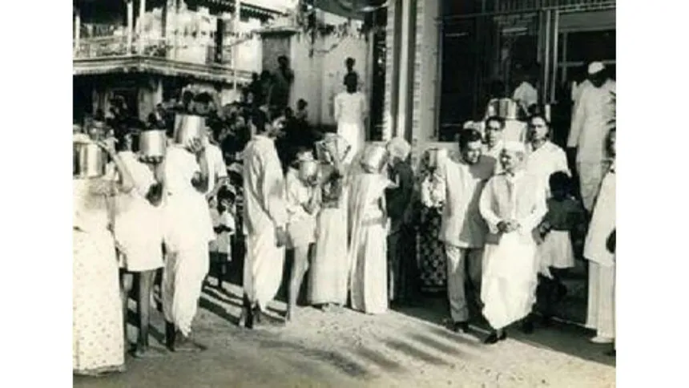

Lal Bahadur Shastri, the second Prime Minister of India, is a beacon of simplicity, integrity, and resilience. Born on October 2, 1904, Shastri Ji dedicated his life to the service of the nation, embodying the values of humility and honesty throughout his illustrious career. His tenure as Prime Minister was marked by significant achievements, including the promotion of the Green Revolution and leading India through the Indo-Pakistan War of 1965. Shastri Ji's inspiring slogan "Jai Jawan Jai Kisan" reflects his vision of a self-reliant and united India, celebrating the contributions of soldiers and farmers alike. His legacy continues to inspire generations, reminding us of the power of dedication, courage, and unwavering commitment to the nation.
Memorable Moments
The Indo-Pakistan War of 1965
During the Indo-Pakistan War of 1965, Lal Bahadur Shastri displayed remarkable leadership and courage.
His call to the nation with the slogan "Jai Jawan Jai Kisan" (Hail the soldier, Hail the farmer) became iconic and exemplified his vision of a strong and self-reliant India.
The Green Revolution
Lal Bahadur Shastri played a pivotal role in promoting the Green Revolution in India,
aiming to increase agricultural productivity to make the country self-sufficient in food grains.
His support for agricultural reforms laid the foundation for significant advancements in India's agricultural sector.
Tashkent Agreement
One of Shastri Ji's significant diplomatic achievements was the Tashkent Agreement in 1966, a peace accord between India and Pakistan brokered by the Soviet Union. This agreement aimed to restore economic and diplomatic relations post the Indo-Pak war of 1965.
Support for the White Revolution

Shastri Ji's support for the White Revolution, aimed at increasing milk production in India, played a crucial role in making India one of the largest producers of milk in the world. His efforts significantly improved the livelihoods of dairy farmers.
Food Crisis and Shastri Ji's Call for Self-Sacrifice
During a severe food crisis in 1965, Shastri Ji appealed to the nation to skip one meal a week to help manage the scarcity. His personal example of observing this practice inspired millions to do the same, showcasing his ability to lead by example and connect with the common people.